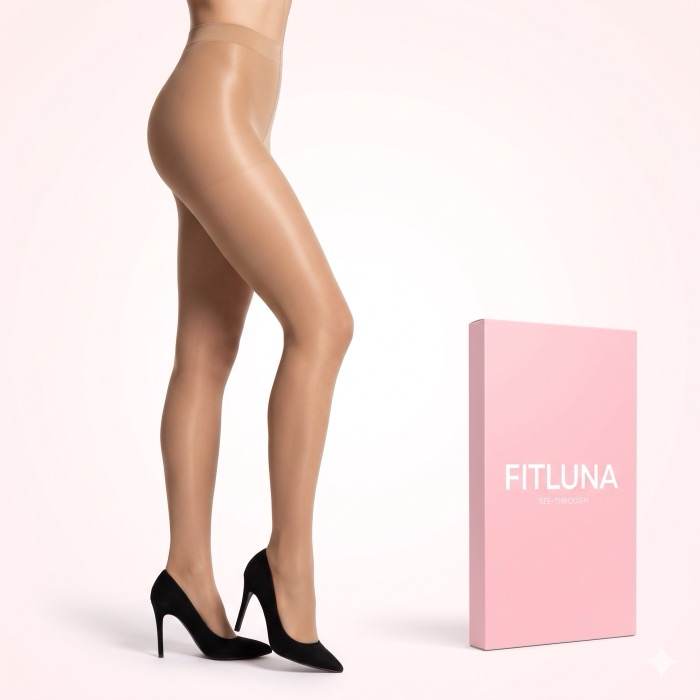
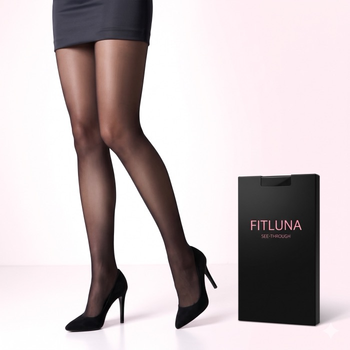

다시 부탁하면 다른 사진이 되는 것을 확인
색만 바꾸고 싶었는데, 포즈와 옷까지 바뀌는 현상 확인
이렇게 부탁했습니다 (요약)첫 컷과 같은 배경, 조명, 구도를 문장으로 자세히 적고 블랙 스타킹 버전으로
배경과 조명을 아무리 자세히 적어도 다리 자세와 옷이 달라졌고, 첫 컷을 첨부하고 나서야 맞춰졌습니다. 고칠 때마다 다시 요청했고, 그때마다 사용량이 차감되는 방식이다 보니 사용량을 줄일 필요가 있었습니다.
→ 값만 바꿔 같은 조건으로 다시 돌릴 수 있는지ComfyUI에서는 값을 바꿔 다시 실행 시, 2초 이내